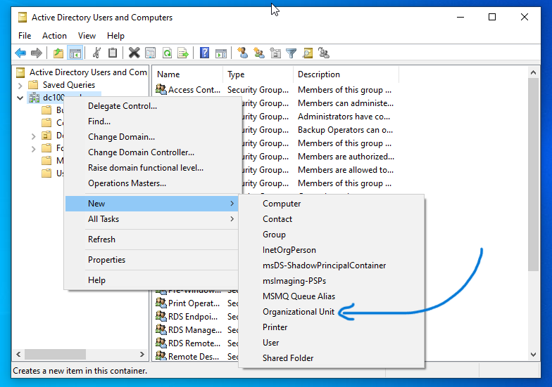
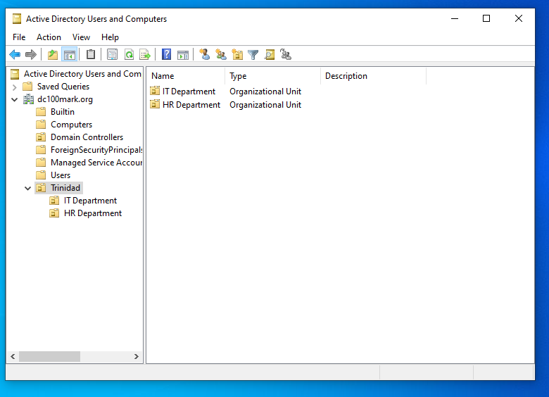

Creating an Organizational Unit
Prerequisites
You're logged in to a domain-joined machine
Active Directory Users and Computers (ADUC) is installed
Steps:
- In windows searchbar type adm and click Windows Administrative Tools
- Open Active Directory Users and Computers

- right click the domain URL
- then click: new -> Organizational Unit
- specify the name of the OU then click OK

- Organizational Units are essentially folders
- They can be used to store Users, Groups and nested OUs
- Example of nested OUs as follows. Parent OU: A company's country location | child OUs: deparments
